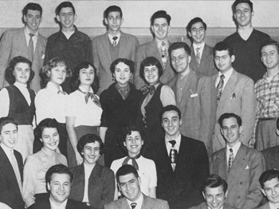
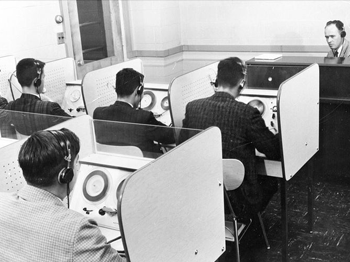

Research

People
Sign Up
Prospective Students

Exploring language and cognition through interdiciplinary research.
Learn moreWe are an interdisciplinary research space dedicated to exploring language and cognition through a multitude of methods.
Current projects include behavioral judgments to written and auditory stimuli, eye movements, EEG recording, mouse tracking, and corpus work.
We have many opportunities for participation in research. If you wish to participate in a study, consult the sign up page to schedule a visit. If you are interested in opportunities to participate in the lab as a student researcher, please contact Jesse Harris directly.